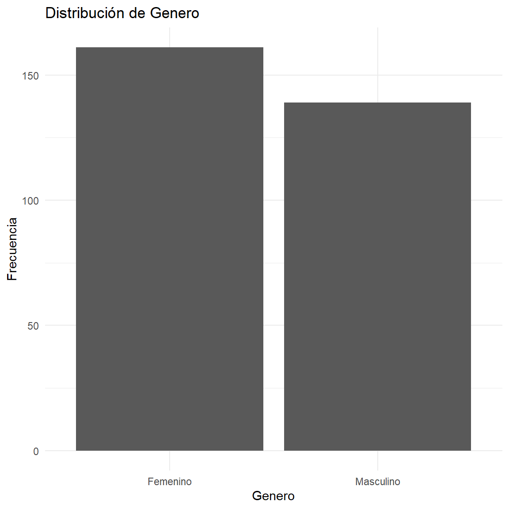
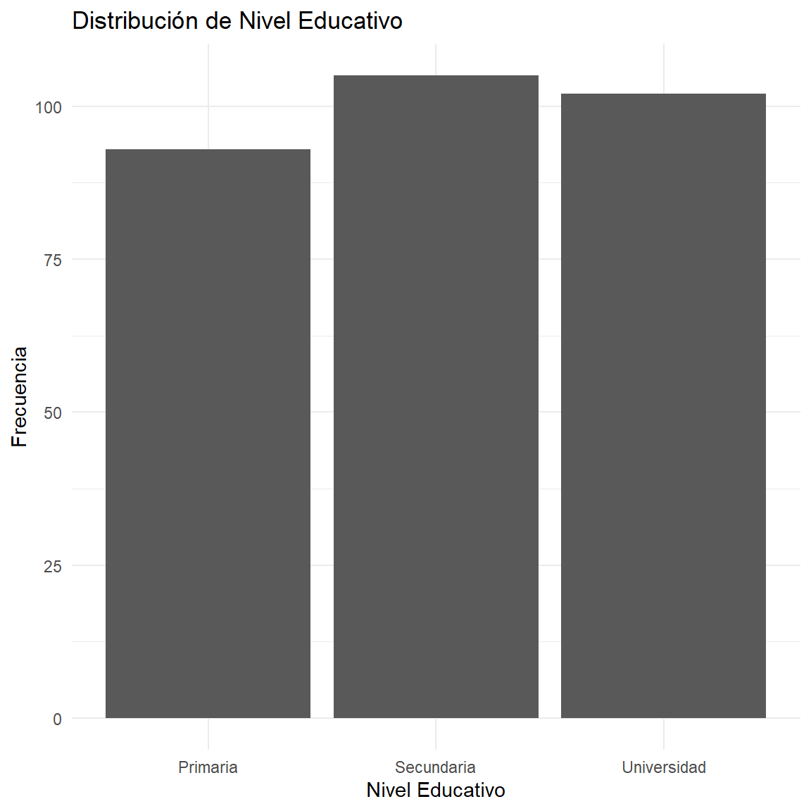
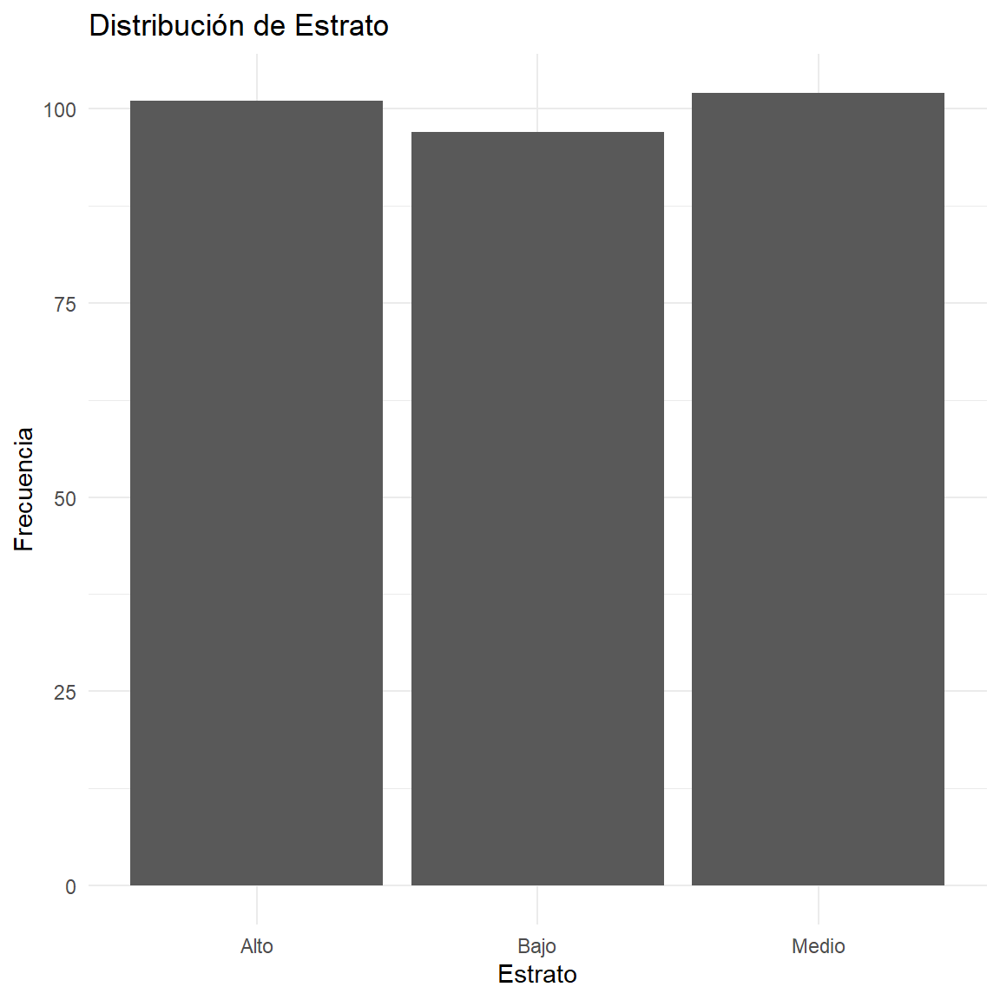
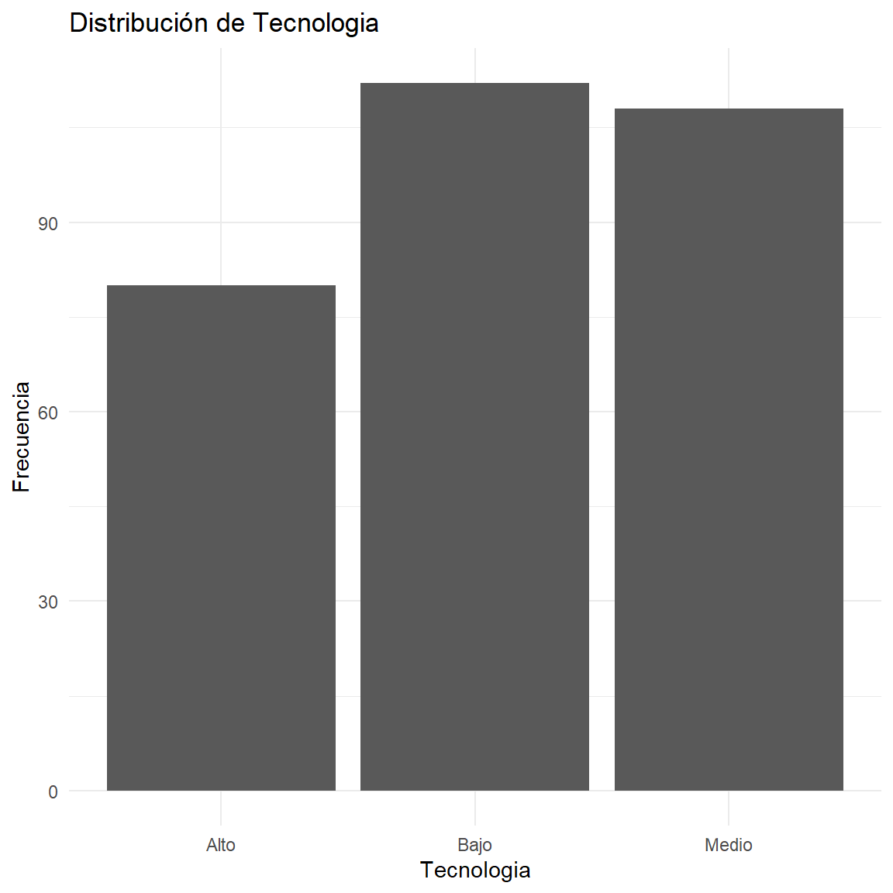
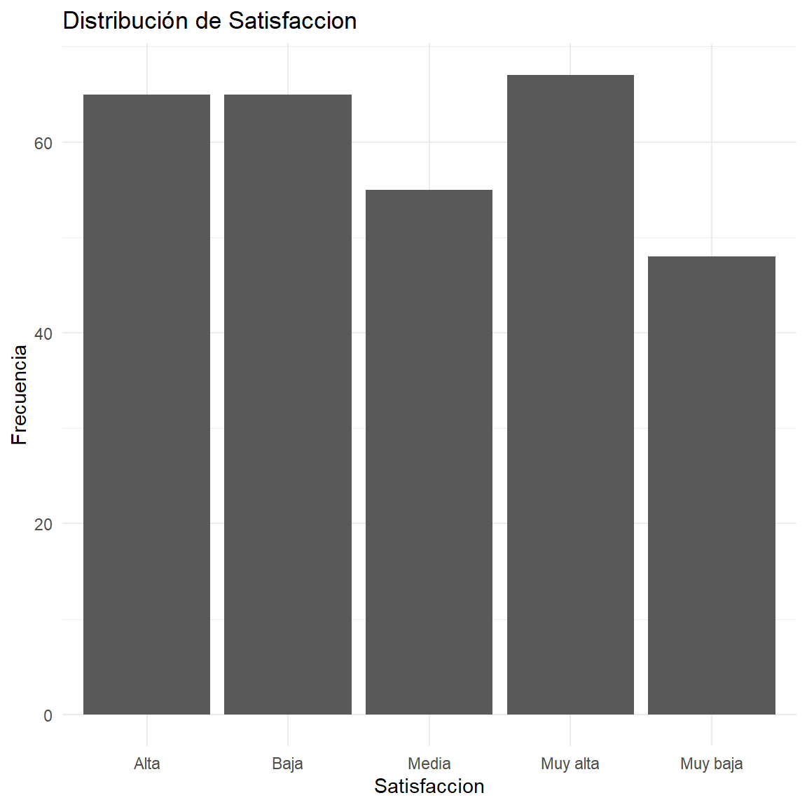
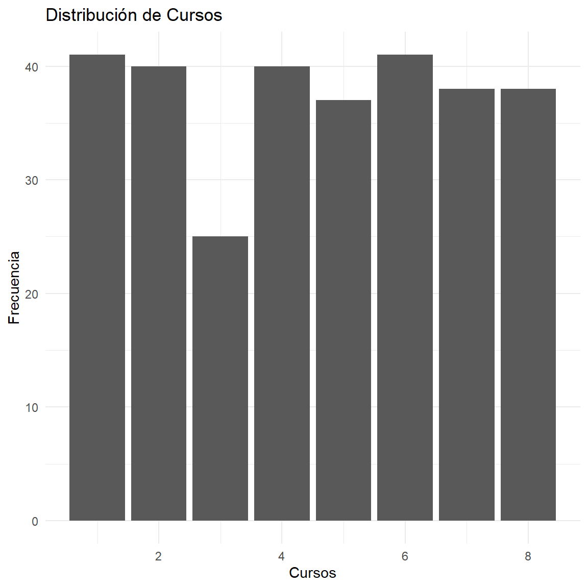
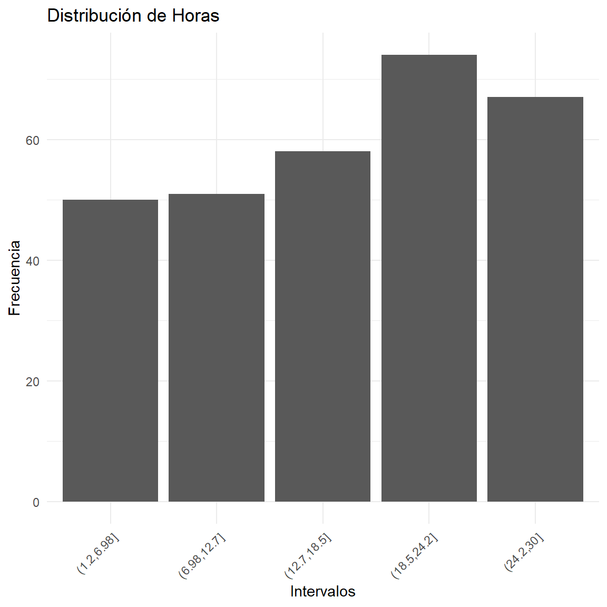
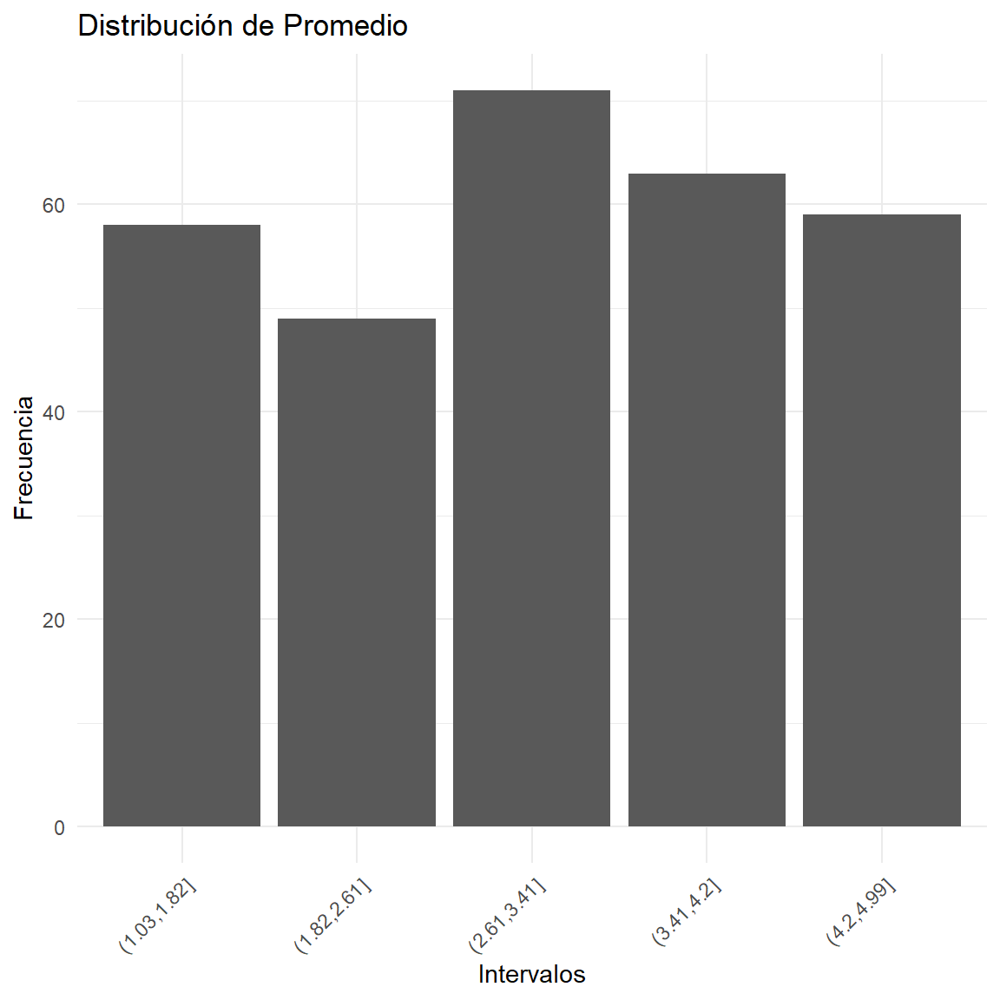
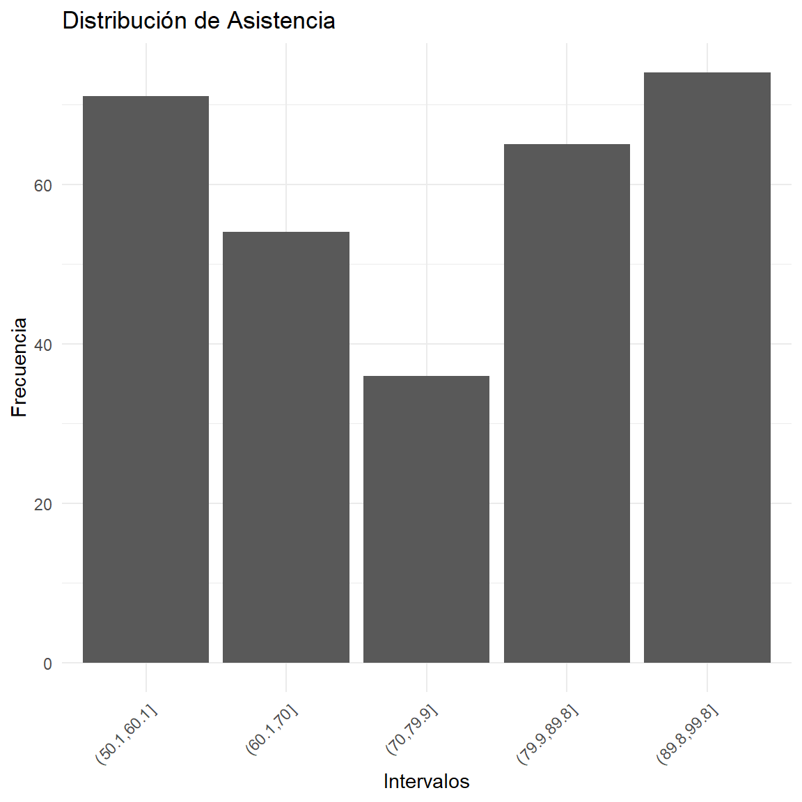

Ver código
options(
knitr.table.format = "html",
scipen = 999
)options(
knitr.table.format = "html",
scipen = 999
)ipak <- function(pkg){
options(repos = c(CRAN="https://cloud.r-project.org"))
new.pkg <- pkg[!(pkg %in% rownames(installed.packages()))]
if(length(new.pkg)) install.packages(new.pkg, dependencies = TRUE)
invisible(lapply(pkg, function(p)
suppressPackageStartupMessages(library(p, character.only = TRUE))
))
}
packages <- c("tidyverse","kableExtra","psych","readxl")
ipak(packages)La Distribución de Frecuencias es un método estadístico diseñado para organizar y resumir un conjunto de datos brutos, permitiendo identificar la estructura y el comportamiento de una variable.
Sea un conjunto de datos de tamaño n, donde existen k valores distintos o clases representadas por x_1, x_2, \dots, x_k.
Es el número de veces que se repite el valor x_i en la muestra. Se debe cumplir la propiedad de cierre: \sum_{i=1}^{k} f_i = n
Representa la proporción de la muestra que corresponde a la i-ésima categoría: h_i = \frac{f_i}{n} Donde la suma de todas las frecuencias relativas es igual a la unidad: \sum_{i=1}^{k} h_i = 1.
Suma de las frecuencias absolutas desde el primer dato hasta la posición i: F_i = \sum_{j=1}^{i} f_j
Proporción acumulada de los datos hasta el intervalo o valor i: H_i = \frac{F_i}{n} = \sum_{j=1}^{i} h_j
Para variables continuas (como los puntajes obtenidos), los datos se agrupan en intervalos de clase siguiendo estos criterios:
Diferencia entre el valor máximo y el mínimo del conjunto de datos: R = x_{max} - x_{min}
Calculado comúnmente mediante la Regla de Sturges: k = 1 + 3.322 \log_{10}(n)
Determina el ancho de cada clase: A = \frac{R}{k}
Es el valor representativo de cada intervalo [L_{inf}, L_{sup}): x_i = \frac{L_{inf} + L_{sup}}{2}
| Col1 | Col2 | Col3 |
|---|---|---|
| Concepto | Símbolo | Definición |
|---|---|---|
| Frecuencia Absoluta | f_i | Conteo directo |
| Frecuencia Relativa | h_i | f_i / n |
| Frecuencia Porcentual | p_i | h_i \cdot 100\% |
| Relación de Acumulación | F_i | F_{i-1} + f_i |
title: “Tablas de Frecuencia” output: html_document —
# Librerías
library(readxl)
library(dplyr)
library(tibble)
library(knitr)
library(kableExtra)
# Cargar datos
datos <- read_excel(file.choose())tabla_genero <- tibble(datos = datos$Genero) %>%
group_by(datos) %>%
summarise(fi = n()) %>%
mutate(
hi = round(fi/sum(fi), 4),
Porcentaje = paste0(hi*100, "%")
)
tabla_genero %>%
kable(col.names = c("Genero","fi","hi","Porcentaje"),
align = "c") %>%
kable_styling(bootstrap_options = c("striped","hover","bordered"),
full_width = FALSE)| Genero | fi | hi | Porcentaje |
|---|---|---|---|
| Femenino | 161 | 0.5367 | 53.67% |
| Masculino | 139 | 0.4633 | 46.33% |
tabla_nivel <- tibble(datos = datos$Nivel_Educativo) %>%
group_by(datos) %>%
summarise(fi = n()) %>%
mutate(
hi = round(fi/sum(fi), 4),
Porcentaje = paste0(hi*100, "%")
)
tabla_nivel %>%
kable(col.names = c("Nivel Educativo","fi","hi","Porcentaje"),
align = "c") %>%
kable_styling(bootstrap_options = c("striped","hover","bordered"),
full_width = FALSE)| Nivel Educativo | fi | hi | Porcentaje |
|---|---|---|---|
| Primaria | 93 | 0.31 | 31% |
| Secundaria | 105 | 0.35 | 35% |
| Universidad | 102 | 0.34 | 34% |
tabla_estrato <- tibble(datos = datos$Estrato) %>%
group_by(datos) %>%
summarise(fi = n()) %>%
mutate(
hi = round(fi/sum(fi), 4),
Porcentaje = paste0(hi*100, "%")
)
tabla_estrato %>%
kable(col.names = c("Estrato","fi","hi","Porcentaje"),
align = "c") %>%
kable_styling(bootstrap_options = c("striped","hover","bordered"),
full_width = FALSE)| Estrato | fi | hi | Porcentaje |
|---|---|---|---|
| Alto | 101 | 0.3367 | 33.67% |
| Bajo | 97 | 0.3233 | 32.33% |
| Medio | 102 | 0.3400 | 34% |
tabla_tecnologia <- tibble(datos = datos$Tecnologia) %>%
group_by(datos) %>%
summarise(fi = n()) %>%
mutate(
hi = round(fi/sum(fi), 4),
Porcentaje = paste0(hi*100, "%")
)
tabla_tecnologia %>%
kable(col.names = c("Tecnologia","fi","hi","Porcentaje"),
align = "c") %>%
kable_styling(bootstrap_options = c("striped","hover","bordered"),
full_width = FALSE)| Tecnologia | fi | hi | Porcentaje |
|---|---|---|---|
| Alto | 80 | 0.2667 | 26.67% |
| Bajo | 112 | 0.3733 | 37.33% |
| Medio | 108 | 0.3600 | 36% |
tabla_satisfaccion <- tibble(datos = datos$Satisfaccion) %>%
group_by(datos) %>%
summarise(fi = n()) %>%
mutate(
hi = round(fi/sum(fi), 4),
Porcentaje = paste0(hi*100, "%")
)
tabla_satisfaccion %>%
kable(col.names = c("Satisfaccion","fi","hi","Porcentaje"),
align = "c") %>%
kable_styling(bootstrap_options = c("striped","hover","bordered"),
full_width = FALSE)| Satisfaccion | fi | hi | Porcentaje |
|---|---|---|---|
| Alta | 65 | 0.2167 | 21.67% |
| Baja | 65 | 0.2167 | 21.67% |
| Media | 55 | 0.1833 | 18.33% |
| Muy alta | 67 | 0.2233 | 22.33% |
| Muy baja | 48 | 0.1600 | 16% |
tabla_cursos <- datos %>%
count(Cursos) %>%
mutate(
hi = round(n/sum(n), 4),
Porcentaje = paste0(hi*100, "%")
)
tabla_cursos %>%
kable(col.names = c("Cursos","fi","hi","Porcentaje"),
align = "c") %>%
kable_styling(bootstrap_options = c("striped","hover","bordered"),
full_width = FALSE)| Cursos | fi | hi | Porcentaje |
|---|---|---|---|
| 1 | 41 | 0.1367 | 13.67% |
| 2 | 40 | 0.1333 | 13.33% |
| 3 | 25 | 0.0833 | 8.33% |
| 4 | 40 | 0.1333 | 13.33% |
| 5 | 37 | 0.1233 | 12.33% |
| 6 | 41 | 0.1367 | 13.67% |
| 7 | 38 | 0.1267 | 12.67% |
| 8 | 38 | 0.1267 | 12.67% |
intervalos_horas <- cut(datos$Horas, breaks = 5)
tabla_horas <- tibble(Intervalo = intervalos_horas) %>%
group_by(Intervalo) %>%
summarise(fi = n()) %>%
mutate(
hi = round(fi/sum(fi), 4),
Porcentaje = paste0(hi*100, "%")
)
tabla_horas %>%
kable(col.names = c("Intervalo","fi","hi","Porcentaje"),
align = "c") %>%
kable_styling(bootstrap_options = c("striped","hover","bordered"),
full_width = FALSE)| Intervalo | fi | hi | Porcentaje |
|---|---|---|---|
| (1.2,6.98] | 50 | 0.1667 | 16.67% |
| (6.98,12.7] | 51 | 0.1700 | 17% |
| (12.7,18.5] | 58 | 0.1933 | 19.33% |
| (18.5,24.2] | 74 | 0.2467 | 24.67% |
| (24.2,30] | 67 | 0.2233 | 22.33% |
intervalos_promedio <- cut(datos$Promedio, breaks = 5)
tabla_promedio <- tibble(Intervalo = intervalos_promedio) %>%
group_by(Intervalo) %>%
summarise(fi = n()) %>%
mutate(
hi = round(fi/sum(fi), 4),
Porcentaje = paste0(hi*100, "%")
)
tabla_promedio %>%
kable(col.names = c("Intervalo","fi","hi","Porcentaje"),
align = "c") %>%
kable_styling(bootstrap_options = c("striped","hover","bordered"),
full_width = FALSE)| Intervalo | fi | hi | Porcentaje |
|---|---|---|---|
| (1.03,1.82] | 58 | 0.1933 | 19.33% |
| (1.82,2.61] | 49 | 0.1633 | 16.33% |
| (2.61,3.41] | 71 | 0.2367 | 23.67% |
| (3.41,4.2] | 63 | 0.2100 | 21% |
| (4.2,4.99] | 59 | 0.1967 | 19.67% |
intervalos_asistencia <- cut(datos$`Asistencia (%)`, breaks = 5)
tabla_asistencia <- tibble(Intervalo = intervalos_asistencia) %>%
group_by(Intervalo) %>%
summarise(fi = n()) %>%
mutate(
hi = round(fi/sum(fi), 4),
Porcentaje = paste0(hi*100, "%")
)
tabla_asistencia %>%
kable(col.names = c("Intervalo","fi","hi","Porcentaje"),
align = "c") %>%
kable_styling(bootstrap_options = c("striped","hover","bordered"),
full_width = FALSE)| Intervalo | fi | hi | Porcentaje |
|---|---|---|---|
| (50.1,60.1] | 71 | 0.2367 | 23.67% |
| (60.1,70] | 54 | 0.1800 | 18% |
| (70,79.9] | 36 | 0.1200 | 12% |
| (79.9,89.8] | 65 | 0.2167 | 21.67% |
| (89.8,99.8] | 74 | 0.2467 | 24.67% |
ggplot(tabla_genero, aes(x = datos, y = fi)) +
geom_bar(stat = "identity") +
labs(title = "Distribución de Genero",
x = "Genero",
y = "Frecuencia") +
theme_minimal()
ggplot(tabla_nivel, aes(x = datos, y = fi)) +
geom_bar(stat = "identity") +
labs(title = "Distribución de Nivel Educativo",
x = "Nivel Educativo",
y = "Frecuencia") +
theme_minimal()
ggplot(tabla_estrato, aes(x = datos, y = fi)) +
geom_bar(stat = "identity") +
labs(title = "Distribución de Estrato",
x = "Estrato",
y = "Frecuencia") +
theme_minimal()
ggplot(tabla_tecnologia, aes(x = datos, y = fi)) +
geom_bar(stat = "identity") +
labs(title = "Distribución de Tecnologia",
x = "Tecnologia",
y = "Frecuencia") +
theme_minimal()
ggplot(tabla_satisfaccion, aes(x = datos, y = fi)) +
geom_bar(stat = "identity") +
labs(title = "Distribución de Satisfaccion",
x = "Satisfaccion",
y = "Frecuencia") +
theme_minimal()
ggplot(tabla_cursos, aes(x = Cursos, y = n)) +
geom_bar(stat = "identity") +
labs(title = "Distribución de Cursos",
x = "Cursos",
y = "Frecuencia") +
theme_minimal()
ggplot(tabla_horas, aes(x = Intervalo, y = fi)) +
geom_bar(stat = "identity") +
labs(title = "Distribución de Horas",
x = "Intervalos",
y = "Frecuencia") +
theme_minimal() +
theme(axis.text.x = element_text(angle = 45, hjust = 1))
ggplot(tabla_promedio, aes(x = Intervalo, y = fi)) +
geom_bar(stat = "identity") +
labs(title = "Distribución de Promedio",
x = "Intervalos",
y = "Frecuencia") +
theme_minimal() +
theme(axis.text.x = element_text(angle = 45, hjust = 1))
ggplot(tabla_asistencia, aes(x = Intervalo, y = fi)) +
geom_bar(stat = "identity") +
labs(title = "Distribución de Asistencia",
x = "Intervalos",
y = "Frecuencia") +
theme_minimal() +
theme(axis.text.x = element_text(angle = 45, hjust = 1))